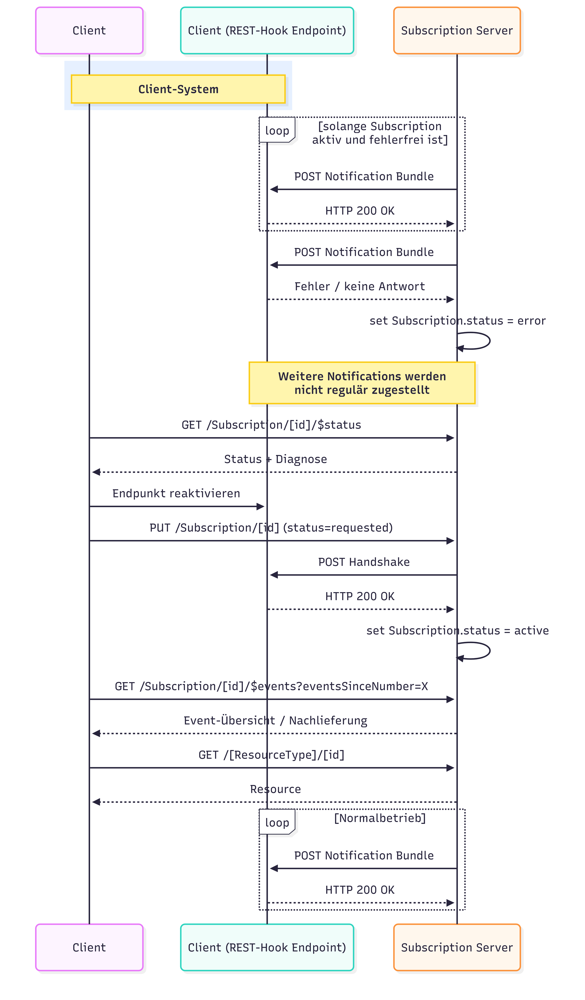

This fragment is not visible to the reader
This publication includes IP covered under the following statements.
| Type | Reference | Content |
|---|---|---|
| web | gematik.de |
IG © 2026+ gematik GmbH
.
Package subscription#6.0.0 based on FHIR 4.0.1
.
Generated 2026-09-02
Links: Table of Contents | QA Report |
| web | gematik.de |
Jede Instanz eines bestätigungsrelevanten Systems MUSS an ihrem Endpunkt eine CapabilityStatement-Ressource bereitstellen.
Hierzu MUSS die capabilities-Interaktion gemäß FHIR-Kernspezifikation
unterstützt werden.
Der MODE
-Parameter kann ignoriert werden. Das CapabilityStatement in dieser Spezifikation stellt die Anforderungen seitens der gematik dar ( kind = requirements
).
Zur Unterscheidung von Rollen, die erfüllt werden MÜSSEN gegenüber jenen, die erfüllt werden KÖNNEN,
wird die CapabilityStatement-Imports-Expectation-Extension
mit den möglichen Werten 'SHALL' (=MUSS) 'SHOULD' (=SOLL) 'MAY' (=KANN) 'SHOULD-NOT' (=SOLL NICHT) verwendet.
|
| web | gematik.github.io | Es gelten alle übergreifenden Festlegungen entsprechend dem ISiK Basismodul . |
| web | gemspec.gematik.de |
Hinweis:
Diese Seite bezieht sich ausschließlich auf Encounter (Kontakt/Fall) im ISiK-Kontext. Zur begrifflichen Abgrenzung von Fall, Encounter, Account und EpisodeOfCare siehe die ISiK-Basis-Seite zur Fallabbildung . |
| web | gematik.github.io | Weitere Details zur technischen Abbildung von Encounter-Ressourcen im ISiK-Kontext finden sich im ISiK-Basis Encounter-Profil . |
| web | gematik.de | Hierfür steht das Subscription Profil samt CodeSystem für das SubscriptionTopic bereit. |
| web | github.com | Zur Illustration der technischen Umsetzung für die Patient merge Notification dient ein Proof of Concept (POC) mit Anleitung . |
| web | semver.org | Im Rahmen der ISiK-Veröffentlichungen wird das Semantic Versioning verwendet. |
| web | github.com |
improve
Update der Dependency auf die neue Basisprofile-DE version 1.6.0 für alle Module https://github.com/gematik/spec-ISiK-Basismodul/pull/1272
|
| web | github.com |
improve
Hinweis zu bekanntem Dependency-Problem im Subscription-Backport-Package inklusive Workaround ergänzt auf Startseite ergänzt. https://github.com/gematik/spec-ISiK-Basismodul/pull/1237
|
| web | github.com |
improve
QA-Verbesserungen: IG-Publisher-Parameter hinzugefügt, ignoreWarnings.txt eingeführt, Umstellung auf deutsche Display-Validierung https://github.com/gematik/spec-ISiK-Basismodul/pull/1190
|
| web | github.com |
fix
Erweiterung der ISiK eigenen Codesysteme um die Information zur Sprache https://github.com/gematik/spec-ISiK-Basismodul/pull/1214
|
| web | github.com |
improve
Performance und Paging-Anforderungen in den übergreifenden Festlegungen eingebracht (gilt für alle Module) https://github.com/gematik/spec-ISiK-Basismodul/pull/1068
|
| web | github.com |
improve
Verpflichtende Einführung des Suchparameters _lastUpdated
https://github.com/gematik/spec-ISiK-Basismodul/pull/1053
|
| web | github.com |
improve
Implicit Rules auf 0..0 beschränkt https://github.com/gematik/spec-ISiK-Basismodul/pull/1075
|
| web | github.com |
improve
Hinzufügen von zwei weiteren Subscription Topics zur Abbildung von aktualisierten bzw. abgesagten Terminen https://github.com/gematik/spec-ISiK-Basismodul/pull/1087
|
| web | github.com |
improve
Subscription-Modul für Stufe 6 normativ erweitert https://github.com/gematik/spec-ISiK-Basismodul/pull/1114/
|
| web | github.com |
improve
id-Elemente sind in allen
Profilen dokumentiert und als bedingtes Pflicht-/MS-Feld gekennzeichnet. https://github.com/gematik/spec-ISiK-Basismodul/pull/799
|
| web | github.com |
documentation
Rendering der im Modul verwendeten ValueSets https://github.com/gematik/spec-ISiK-Basismodul/pull/802
|
| web | github.com |
documentation
Dokumentation der Suchparameter (Beispiele) in CpS überführt. Darüber hinaus wurden einige Suchparameter, aus Stufe 3 in Stufe 5 übernommen https://github.com/gematik/spec-ISiK-Basismodul/pull/809
|
| web | github.com |
improve
Nachbau der Profile BackportSubscriptionNotificationR4
& BackportSubscriptionStatusR4
, Hinzufügen der R4B CS & VS SubscriptionNotificationType
https://github.com/gematik/spec-ISiK-Basismodul/pull/645
|
| web | en.wikipedia.org | Both Bundle.link and Bundle.entry.link are defined to support providing additional context when Bundles are used (e.g. HATEOAS ). |
| web | service.gematik.de | Hinweise zu Inkompatibilitäten können über die Portalseite gemeldet werden. |
| web | de.wikipedia.org | Die gematik wurde vom Gesetzgeber beauftragt, im Benehmen mit der Deutschen Krankenhausgesellschaft (DKG) und den maßgeblichen Bundesverbänden der Industrie im Gesundheitswesen, verbindliche Standards für den Austausch von Gesundheitsdaten mit Informationssystemen im Krankenhaus zu erarbeiten. Dieser FHIR ImplementationGuide (IG) beschreibt die für diesen Zweck entwickelten FHIR Profile und das REST -basierte Application Programming Interface (API). Die REST-API wird im Wesentlichen vom FHIR Standard vorgegeben . Dieser Leitfaden konkretisiert die ISiK-relevanten Funktionen der Standard-REST-API und trifft inhaltliche Festlegungen zu den ISiK-relevanten Ressourcen in Form von Ressourcen-Profilen. |
| web | www.gesetze-im-internet.de | Weitere Informationen siehe §373 SGB V . |
| web | www.bfarm.de | Hinweis: Sowohl für die Implementierung der ISiK-Spezifikation als auch für den Betrieb eines Produktes, das die ISiK-Spezifikation implementiert, ist eine SNOMED-CT-Lizenz notwendig. Diese kann beim National Release Center für SNOMED CT in Deutschland beantragt werden. |
| web | service.gematik.de | Bringen Sie Allgemeine Fragen und Anmerkungen gerne über unser Anfrageportal ein: Anfragen ISiK + ISiP |
| web | www.gematik.de | Impressum |
|
Workflow_Fehlerfall.png  |
|
Workflow_Normalfluss.png
|
|
tree-filter.png
|